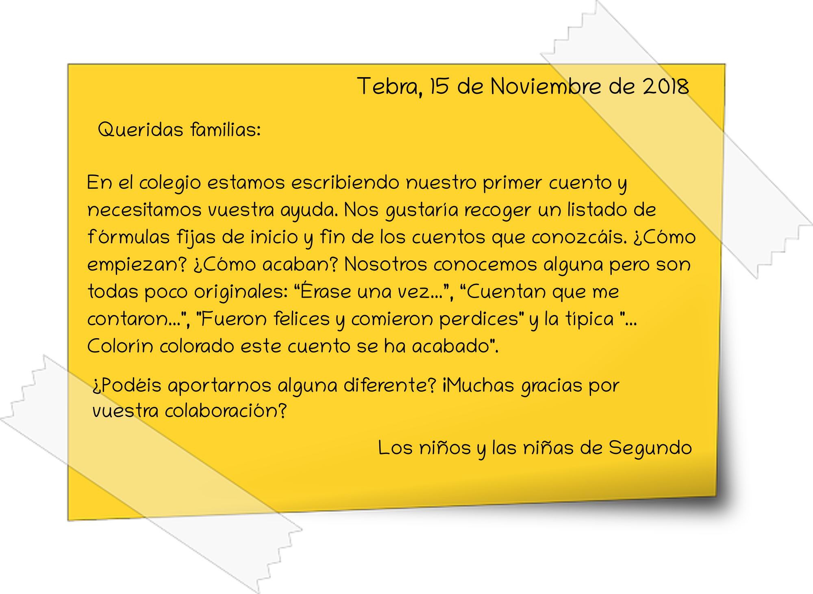
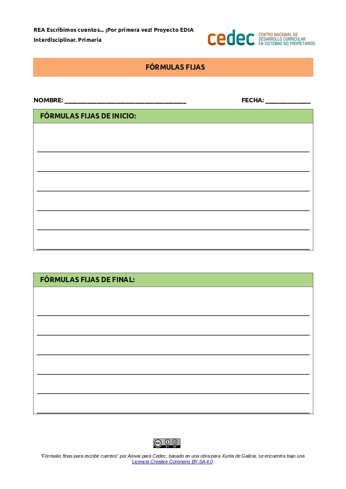

Fórmulas fijas
Los cuentos, sobre todo los clásicos, tienen diferentes fórmulas fijas de inicio y de fin. Vamos a recopilar el mayor número posible a través de diferentes fuentes: consultando los libros de la biblioteca, preguntando a las familias o buscando en internet.
ACTIVIDAD 1: Elaboración de una nota para las familias
- Duración:
- 60 min
- Agrupamiento:
- Gran grupo
Graficaremos el texto que, de forma colaborativa, escribimos entre todos. Esta nota se hará llegar a las familias con el objetivo de involucrarlas, logrando así una mayor motivación por parte del alumnado.
Se puede consultar este modelo de ejemplo (descargar en formato editable odt y en pdf).

ACTIVIDAD 2: Recopilación de fórmulas fijas en la biblioteca
- Duración:
- 60 min
- Agrupamiento:
- Parejas
Por parejas, en la biblioteca, revisar y recopilar las fórmulas fijas de inicio y final entre una selección de cuentos realizada por la persona docente.
- Modelo de recogida de fórmulas fijas
-
Entregamos este modelo al alumnado para la recogida de fórmulas fijas, teniendo en cuenta que es posible su adaptación previa por parte del docente con el software LibreOffice Writer.
- Modelo de plantilla con fórmulas fijas (descargar en formato editable odt y en pdf).

ACTIVIDAD 3: Puesta en común
- Duración:
- 60 min
- Agrupamiento:
- Gran grupo
Recoger las fórmulas fijas recopiladas en un panel expositor visible durante el desarrollo de toda la secuencia.
Ejemplificación del resultado: Fórmulas de inicio
- Había una vez...
- Érase una vez...
- En un país lejano...
- Érase que se era...
- Érase una vez y mentira no es...
- Cuenta que cuentan que me contaron...
- Hace más de mil años...
- En tiempos de Marí Castaña...
- Hace mucho, mucho tiempo...
- Contaron los que lo vieron...
- Aquel que lo vió, llegó y me contó que...
- Para saber y contar, y contar para aprender...
- Tienes que saber para contar y entender para saber que esto era...
- Cuando los animales hablaban...
- Detrás de las siete montañas, detrás de los siete ríos...
- Cuando las ranas tenían pelo y las gallinas dientes...
- Esto que te cuento sucedió en un lugar tan alejado y hace tanto tiempo que ya casi ni me acuerdo...
- Hace más de mil años...
- Una vez yo sabía un cuento pero se quedó dentro y no me acuerdo, voy a ver si sale otra vez...
Ejemplificación del resultado: Fórmulas de final
- Colorín colorado, este cuento está acabado
- Fueron felices y comieron perdices
- Esto fue verdad y no miento, como me lo contaron, lo contaré
- Es que no quería creer, que lo fuera a ver
- Y esta historia acabo y el viento se la llevó
- Fueron felices y comieron perdices y a mi no me dieron porque no quisieron
- Y como dicen Don Fermín, este cuento llegó a su fin
- Colorín colorado, este cuento está acabado, y quien no levante el culo le quedará pegado
- Colorín colorado, este cuento está acabado, si quieres que te lo cuente otra vez cierra los ojos y cuenta hasta tres
- Colorín colorado, este cuento está acabado, si quieres que te lo cuente otra vez di que si y grita
- Y fueron felices y comieron perdices y a mi me dieron con un hueso en las narices
- Y este cuento acabó y el viento se lo llevó y cuando lo vuelva a encontrar, te lo volveré a contar
Obra publicada con Licencia Creative Commons Reconocimiento Compartir igual 4.0